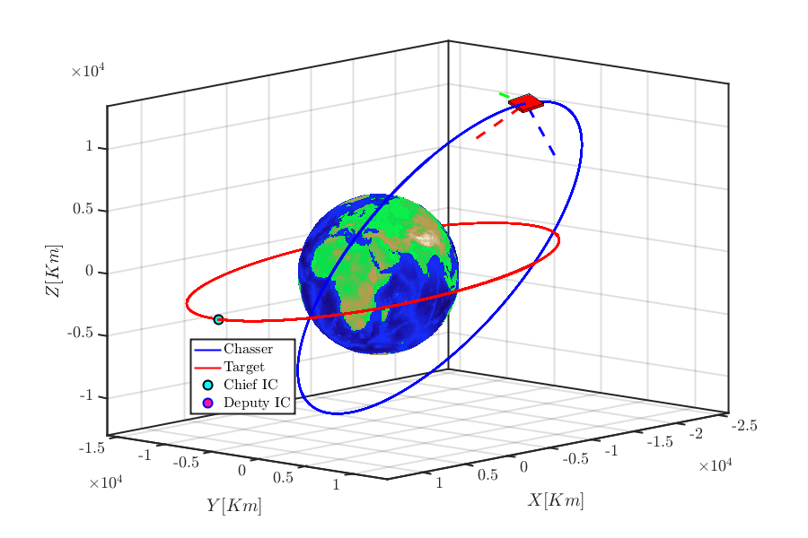
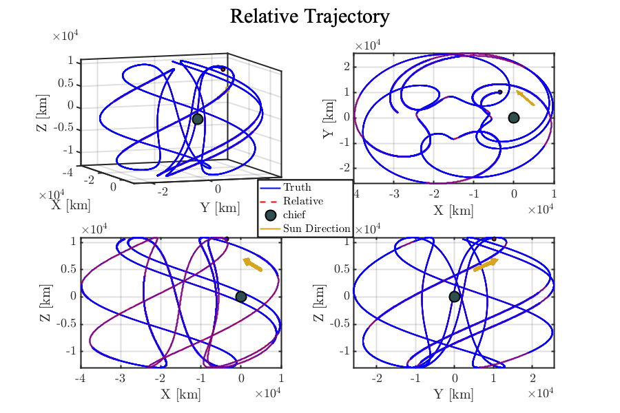
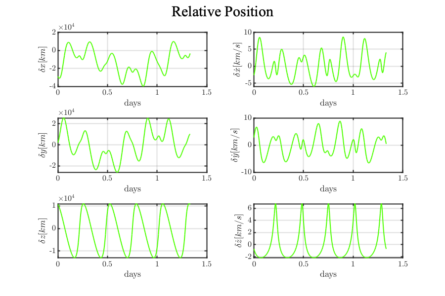
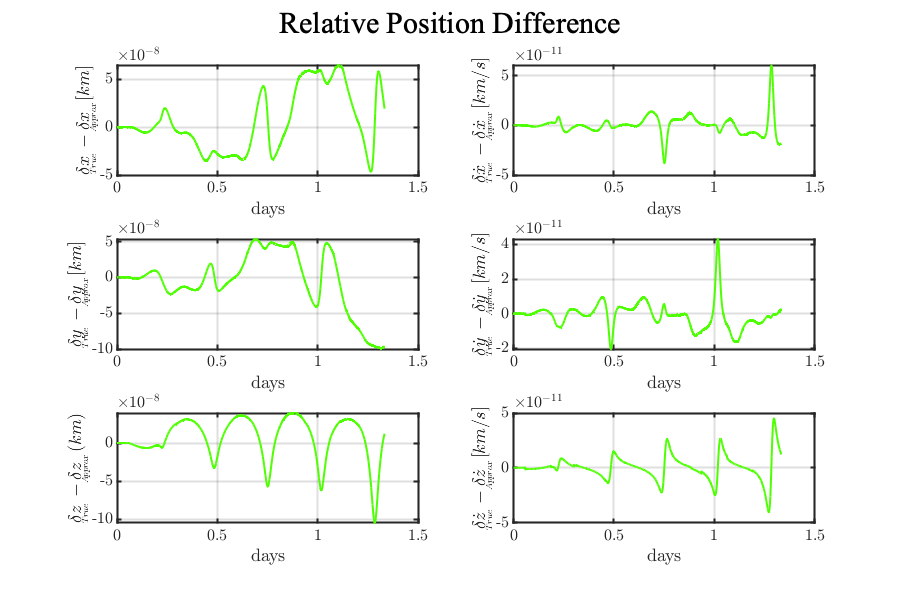
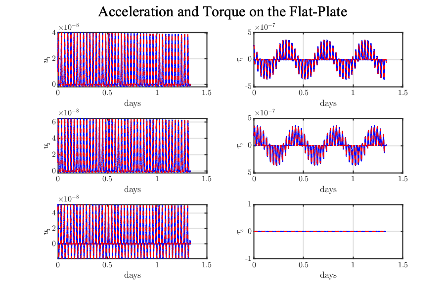
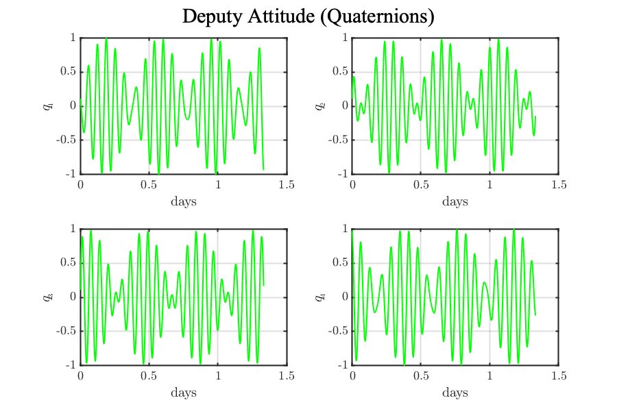

Contents
clear all
close all
clc
format long
start_up
global mu_Earth ae JD AU Target Chasser index ...
acc2body time2body accrelative timerelative
index = 1;
ae = 6378.136;
mu_Earth = 3.986004415E5;
JD = 2456296.25;
AU = 149597870.7;
a1 = 1.5E+4;
e1 = 0.1;
inc1 = 10;
BigOmg1 = 50;
LitOmg1 = 10;
f1 = -80;
Target = Spacecraft([10 6 2 40 10 0.2 0.5 6 12]);
qr_target = [1 0 0 0]';
qr_target = qr_target/norm(qr_target);
Omega_target = zeros(3,1);
a2 = 1.75E+4;
e2 = 0.52;
inc2 = 60.1 ;
BigOmg2 = 10;
LitOmg2 = 0;
f2 = 124;
Chasser = Spacecraft([30 30 4 116 40 0.9 0.9 3000 6000]);
qr_chasser = [1 1 1 9]';
qr_chasser = qr_chasser/norm(qr_chasser);
Omega_chaser = 0.2*[deg2rad(-.5) deg2rad(.4) deg2rad(.1)]';
Converting angles in radians
inc1 = deg2rad(inc1); BigOmg1 = deg2rad(BigOmg1); LitOmg1 = deg2rad(LitOmg1); f1 = deg2rad(f1);
COE1 = [a1,e1,inc1,BigOmg1,LitOmg1,f1];
[Position_target,Velocity_target] = COEstoRV(COE1,mu_Earth);
inc2 = deg2rad(inc2); BigOmg2 = deg2rad(BigOmg2); LitOmg2 = deg2rad(LitOmg2); f2 = deg2rad(f2);
COE2 = [a2,e2,inc2,BigOmg2,LitOmg2,f2];
[Position_chaser,Velocity_chaser] = COEstoRV(COE2,mu_Earth);
Initial condtions
Period = 2*pi*sqrt(a2^3/mu_Earth);
int_time = 5*Period;
tspan = linspace(0,int_time,10000);
options = odeset('RelTol',2.22045e-14,'AbsTol',2.22045e-40);
Integrate the trajectory in cartesian coordinates (Validation purposes only)
for k = 1
CN = Quaternion_to_DCM(qr_chasser); Omega_chaser_B = CN*Omega_chaser;
Aug_chasser_Xo = [qr_chasser; Omega_chaser_B; Position_chaser; Velocity_chaser];
TN = Quaternion_to_DCM(qr_target); Omega_target_B = TN*Omega_target;
Aug_target_Xo = [qr_target; Omega_target_B; Position_target; Velocity_target];
Aug_Xo = [Aug_chasser_Xo; Aug_target_Xo];
tic
[time1, Aug_X] = ode113(@(t,Aug_X)my2Bodyfunc(t,Aug_X,Target,Chasser),tspan,Aug_Xo,options);
toc
JulianDay = JD+tspan(1)/86400;
[XS, Vs, ~] = Ephem(JulianDay,3,'EME2000');
XSUN_ECI = XS/norm(XS);
TN = DCM(Position_target,Velocity_target);
XSUN_LVLH = TN*XSUN_ECI;
quaternion_chasser1 = Aug_X(:,1:4);
quaternion_target1 = Aug_X(:,14:17);
omega_chasser1 = nan(length(time1),3);
omega_target1 = nan(length(time1),3);
R_target2 = nan(length(time1),3);
V_target2 = nan(length(time1),3);
R_chasser2 = nan(length(time1),3);
V_chasser2 = nan(length(time1),3);
TR_rel = nan(length(time1),3);
TV_rel = nan(length(time1),3);
for j = 1:length(time1)
CN = Quaternion_to_DCM(quaternion_chasser1(j,:)');
omega_chasser1(j,:) = (CN'*Aug_X(j,5:7)')';
Chasser_r = Aug_X(j,8:10)'; Chasser_v = Aug_X(j,11:13)'; Target_r = Aug_X(j,21:23)'; Target_v = Aug_X(j,24:26)';
h_vec = cross(Target_r,Target_v); h_norm = norm(h_vec);
eh = h_vec/h_norm; rt_norm = norm(Target_r);
U_eci_Target = F_CanonBall(time1(j),Target_r,Target);
N_nudot = h_vec/rt_norm^2 + dot(U_eci_Target,eh)*Target_r/h_norm;
TN = DCM(Target_r,Target_v); NOmega_target = cross(Target_r,Target_v)/norm(Target_r)^2;
NR_rel = Chasser_r - Target_r; NV_rel = Chasser_v - Target_v;
TR_rel(j,:) = TN*NR_rel; TV_rel(j,:) = TN*(NV_rel - cross(N_nudot,NR_rel));
end
R_chasser1 = [Aug_X(:,8) Aug_X(:,9) Aug_X(:,10)]; V_chasser1 = [Aug_X(:,11) Aug_X(:,12) Aug_X(:,13)];
R_target1 = [Aug_X(:,21) Aug_X(:,22) Aug_X(:,23)]; V_target1 = [Aug_X(:,24) Aug_X(:,25) Aug_X(:,26)];
end
Elapsed time is 13.346945 seconds.
Integrating the relative motion in the chief's LVLH frame
TN = DCM(Position_target,Velocity_target); rt_norm = norm(Position_target);
h_vec = cross(Position_target,Velocity_target); h_norm = norm(h_vec);
eh = h_vec/h_norm;
U_eci_Target = F_CanonBall(time1(1),Position_target,Target);
N_nudot = h_vec/rt_norm^2 + dot(U_eci_Target,eh)*Position_target/h_norm;
NR_rel = Position_chaser - Position_target; NV_rel2 = Velocity_chaser - Velocity_target;
TR_rel0 = TN*NR_rel; TV_rel0 = TN*(NV_rel2 - cross(N_nudot,NR_rel));
X_aug0 = [Position_target; Velocity_target; qr_chasser; Omega_chaser_B; TR_rel0; TV_rel0];
index = 1;
tic
[time, X_rel] = ode113(@(t,X_aug)RelativeMotionODE(t, X_aug, Target, Chasser),time1,X_aug0,options);
toc
Elapsed time is 9.959191 seconds.
Plots
for k = 1
for ii = 1
c1 = rgb('DeepPink'); c2 = rgb('Cyan'); c3 = rgb('Goldenrod');
B_axis1 = [1 0 0]';
B_axis2 = [0 1 0]';
B_axis3 = [0 0 1]';
Len = 5000;
CN = Quaternion_to_DCM(qr_chasser);
P = R_chasser1(1,:) ;
L = 2*[1000,1000,100];
shift = 1/2*CN'*L';
O = P-shift';
Reference_N = ReferenceFrame(R_chasser1(1,:)',R_target1(1,:)');
NTarget1 = Reference_N'*B_axis1;
NTarget2 = Reference_N'*B_axis2;
NTarget3 = Reference_N'*B_axis3;
v2a = P+Len*NTarget1';
va = [v2a;P];
v2b = P+Len*NTarget2';
vb = [v2b;P];
v2c = P+Len*NTarget3';
vc = [v2c;P];
for jj=1
figure('Renderer', 'painters', 'Position', [15 15 900 600])
h1 = plot3(R_chasser1(:,1),R_chasser1(:,2),R_chasser1(:,3),'b');
hold on
cube = plotcube(L,O,1,[1 0 0],CN');
Taxis_head1 = plot3(va(:,1),va(:,2),va(:,3),'g--','LineWidth',3);
Taxis_head2 = plot3(vb(:,1),vb(:,2),vb(:,3),'b--','LineWidth',3);
Taxis_head3 = plot3(vc(:,1),vc(:,2),vc(:,3),'r--','LineWidth',3);
h2 = plot3(R_target1(:,1),R_target1(:,2),R_target1(:,3),'r');
earth_sphere('km');
h3 = plot3(R_chasser1(1,1),R_chasser1(1,2),R_chasser1(1,3),'ro',...
'LineWidth',2,...
'MarkerEdgeColor','b',...
'MarkerFaceColor',c1,...
'MarkerSize',10);
h4 = plot3(R_target1(1,1),R_target1(1,2),R_target1(1,3),'bo',...
'LineWidth',2,...
'MarkerEdgeColor','k',...
'MarkerFaceColor',c2,...
'MarkerSize',10);
grid on
hold off
axis equal
xlabel('$X [ Km ]$')
ylabel('$Y [ Km ]$')
zlabel('$Z [ Km ]$')
h = legend([h1 h2 h4,h3],{'Chasser', 'Target','Chief IC','Deputy IC'});
rect = [0.25, 0.25, 0.1, 0.1];
set(h, 'Position', rect)
box on
view(132,10)
end
end
for ii =1
c1 = rgb('Crimson'); c2 = rgb('DarkSlateGray');
figure('Renderer', 'painters', 'Position', [15 15 900 600])
for kk = 1:4
subplot(2,2,kk)
for jj=1
h1 = plot3(TR_rel(:,1),TR_rel(:,2),TR_rel(:,3),'b-');
hold on
h4 = plot3(X_rel(:,14),X_rel(:,15),X_rel(:,16),'r--');
h2 = plot3(TR_rel(1,1),TR_rel(1,2),TR_rel(1,3),'-','color', c3,...
'LineWidth',2,...
'MarkerEdgeColor','b',...
'MarkerFaceColor',c3,...
'MarkerSize',5);
h3 = plot3(TR_rel(end,1),TR_rel(end,2),TR_rel(end,3),'bo',...
'LineWidth',2,...
'MarkerEdgeColor','k',...
'MarkerFaceColor',c1,...
'MarkerSize',5);
h5 = plot3(0,0,0,'bo',...
'LineWidth',2,...
'MarkerEdgeColor','k',...
'MarkerFaceColor',c2,...
'MarkerSize',15);
arrow3D([.5e4,.5e4,.5e4] ,8e3*XSUN_LVLH,c3)
h = legend([h1, h4, h5, h2],{'Truth','Relative','chief','Sun Direction'});
rect = [0.43, 0.435, 0.125, 0.12];
set(h, 'Position', rect)
box on
grid on
xlabel('X [km]')
ylabel('Y [km]')
zlabel('Z [km]')
end
if kk == 1
view(70,10)
elseif kk==2
view(0,90)
elseif kk==3
view(0,0)
else
view(90,0)
end
end
sgt = sgtitle('Relative Trajectory','interpreter','tex');
sgt.FontSize = 30;
end
for jj=1
DQ1 = [X_rel(:,14) X_rel(:,17) X_rel(:,15) X_rel(:,18) X_rel(:,16) X_rel(:,19)];
figure('Renderer', 'painters', 'Position', [15 15 900 600])
YLabel={'$\delta x [km]$',...
'$\delta \dot{x} [km/s]$',...
'$\delta y [km]$',...
'$\delta \dot{y} [km/s]$',...
'$\delta z [km]$',...
'$\delta \dot{z} [km/s]$'};
for i=1:6
subplot(3,2,i)
plot1 = plot(time/86400,DQ1(:,i));
ylabel(YLabel(i))
xlabel('days')
grid on
end
sgt = sgtitle('Relative Position','interpreter','tex');
sgt.FontSize = 30;
end
for jj=1
DQ1 = [X_rel(:,14) X_rel(:,17) X_rel(:,15) X_rel(:,18) X_rel(:,16) X_rel(:,19)];
DQ2 = [TR_rel(:,1) TV_rel(:,1) TR_rel(:,2) TV_rel(:,2) TR_rel(:,3) TV_rel(:,3)];
figure('Renderer', 'painters', 'Position', [15 15 900 600])
YLabel={'$\delta x_{_{_{\!\!\!\!\!\!\!\!\!\!\!\!True}}} - \delta x_{_{_{\!\!\!\!\!\!\!\!\!\!\!\!\!\!Approx}}}[km]$',...
'$\delta \dot{x}_{_{_{\!\!\!\!\!\!\!\!\!\!\!\!True}}} - \delta \dot{x}_{_{_{\!\!\!\!\!\!\!\!\!\!\!\!\!\!Approx}}}[km/s]$',...
'$\delta y_{_{_{\!\!\!\!\!\!\!\!\!\!\!\!True}}} - \delta y_{_{_{\!\!\!\!\!\!\!\!\!\!\!\!\!\!Approx}}}[km]$',...
'$\delta \dot{y}_{_{_{\!\!\!\!\!\!\!\!\!\!\!\!True}}} - \delta \dot{y}_{_{_{\!\!\!\!\!\!\!\!\!\!\!\!\!\!Approx}}}[km/s]$',...
'$\delta z_{_{_{\!\!\!\!\!\!\!\!\!\!\!\!True}}} - \delta z_{_{_{\!\!\!\!\!\!\!\!\!\!\!\!\!\!Approx}}}(km)$',...
'$\delta \dot{z}_{_{_{\!\!\!\!\!\!\!\!\!\!\!\!True}}} - \delta \dot{z}_{_{_{\!\!\!\!\!\!\!\!\!\!\!\!\!\!Approx}}}[km/s]$'};
for i=1:6
subplot(3,2,i)
plot1 = plot(time/86400,DQ1(:,i)-DQ2(:,i));
ylabel(YLabel(i))
xlabel('days')
grid on
end
sgt = sgtitle('Relative Position Difference','interpreter','tex');
sgt.FontSize = 30;
end
for jj=1
acc2body = [acc2body(:,1), acc2body(:,4), acc2body(:,2), acc2body(:,5), acc2body(:,3), acc2body(:,6)];
accrelative = [accrelative(:,1), accrelative(:,4), accrelative(:,2), accrelative(:,5), accrelative(:,3), accrelative(:,6)];
figure('Renderer', 'painters', 'Position', [15 15 900 600])
YLabel={'$u_{_{\!1}}$', '$\tau_{_{\!1}}$', '$u_{_{\!2}}$',...
'$\tau_{_{\!2}}$', '$u_{_{\!3}}$', '$\tau_{_{\!3}}$'};
for i=1:6
subplot(3,2,i)
plot(time2body/86400,acc2body(:,i),'b')
hold on
plot(timerelative/86400,accrelative(:,i),'r--')
ylabel(YLabel(i))
xlabel('days')
grid on
end
sgt = sgtitle('Acceleration and Torque on the Flat-Plate','interpreter','tex');
sgt.FontSize = 30;
end
for jj=1
Q1 = Aug_X(:,1:4);
Q2 = X_rel(:,7:10);
figure('Renderer', 'painters', 'Position', [15 15 900 600])
YLabel={'$q_{_{\!1}}$','$q_{_{\!2}}$','$q_{_{\!3}}$','$q_{_{\!4}}$'};
for i=1:4
subplot(2,2,i)
plot(time/86400,Q1(:,i),'g')
ylabel(YLabel(i))
xlabel('days')
grid on
end
sgt = sgtitle('Deputy Attitude (Quaternions)','interpreter','tex');
sgt.FontSize = 30;
end
for jj=1
figure('Renderer', 'painters', 'Position', [15 15 900 600])
YLabel={'$\omega_{_{\!1}}$','$\omega_{_{\!2}}$','$\omega_{_{\!3}}$'};
for i=1:3
subplot(3,1,i)
plot(time/86400,omega_chasser1(:,i),'b')
ylabel(YLabel(i))
xlabel('days')
grid on
end
sgt = sgtitle('Deputy Angular Velocity','interpreter','tex');
sgt.FontSize = 30;
end
end
     